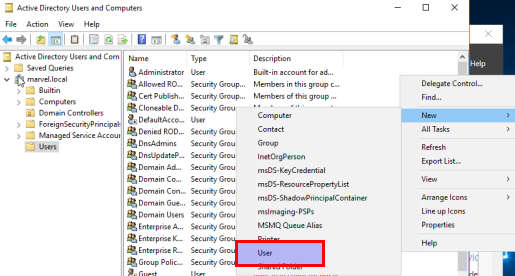
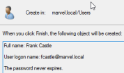

Press ctrl + alt + delete to unlock
=> Right ctrl ! (left ctrl doesn't work)
- Network
- Discoverable ? : yes
- System : Right click on Windows icon > System

- - Computer name, domain and workgroup settings > Change settings

- - Computer name > Change

- - Computer name : HYDRA

-
- Server Manager
- Dashboard > 2. Add roles and features
- - Installaton type : Role-based or feature-based installation
- - Server selection : Select a server from the server pool : HYDRA
- - Server roles :
- - File and storage services
- - Active directory domain services
- - Features :
- - .NET framework 4.6 features
- - Group policy management
- - AD DS : nothing to do
- - Confirmation : nothing to do
- => Install
- - Dashboard > Notification > Promote this server to a domain controller

- - Deployement configuration : Add a new forest
- - Root domain name : marvel.local
- - Domain controller options :
- - Forest functional level : Windows Server 2016
- - Domain functional level : Windows Server 2016
- - DNS : yes
- - GC : yes
- - DSRM password : Ind1-gorillaz
- - DNS options : nothing to do
- - Create DNS delegation : no
- - Additional options : nothing to do
- - The NetBIOS domain name : MARVEL
- - Paths : nothing to do
- - Database folder : C:\Windows\NTDS
- - Log files : C:\Windows\NTDS
- - SYSVOL folder : C:\Windows\SYSVOL
- - Review options : nothing to do
- - Prerequisite checks : nothing to do
- => Install
- => Restart
- Server Manager
- Dashboard > Tools > Active Directory Users and Computers

- > marvel.local
- > Domain Controllers : HYDRA -> is OK !
- > Users : Administrator -> is OK !
- - Right click on Users window > New > User
- 
- - New Object - User :
- - First name : Franck
- - Last name : Castle
- - User logon name : fcastle
- - Password : Password1
- - Password never expires : yes, all others : no
- 
- => Finish
-
- CMD
> ipconfig